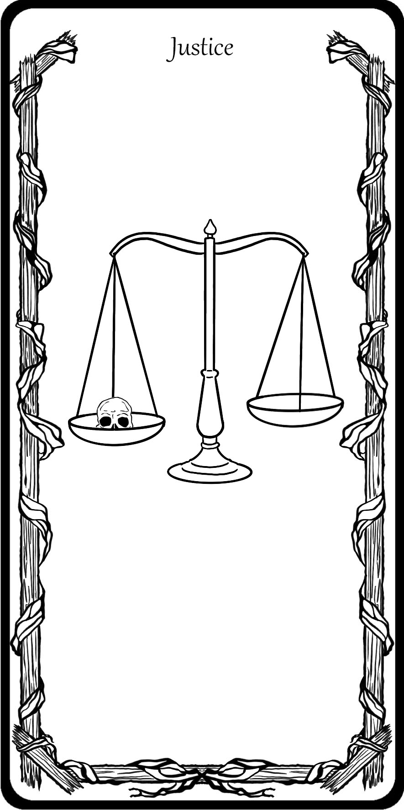
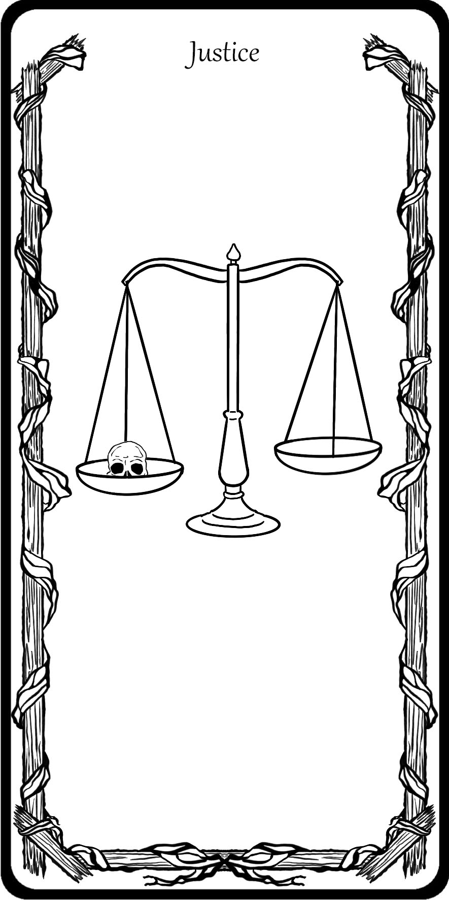

Projet libre
Pour le projet de fin d'année, nous avions carte blanche. Cela donnait l'opportunité de faire une grosse production alors j'ai décidé de créer un oracle. J'ai toujours été fascinée par les jeux d'oracle et de tarot sans pour autant y participer. Il y a une atmosphère à travers ces jeux vraiment intéressante c'est pourquoi j'ai décidé de créer un oracle. J'ai commencé par dessiner un cadre que l'on verrait sur toutes les cartes puis j'ai dessiné leur contenu. Il y a en tout 50 cartes, il a fallu que je les aligne correctement sur InDesign afin de préparer les typons qui serviront à sérigraphier. Comme j'avais passé beaucoup de temps à la conception des dessins des cartes, il ne me restait plus beaucoup de temps pour tt sérigraphier, j'ai donc fait beaucoup "d'heures supplémentaires". Généralement, je venais le mercredi matin pour continuer mon projet seule car le cours ne commençait que l'après-mdi. Si j'avais bien avancé le matin, je passais le cours de l'après-midi à aider les camarades qui avaient besoin d'aide. Si je ne pouvais pas venir le matin, je continuais pendant le cours l'après-midi jusqu'au soir, souvent jusqu'à 20h. J'ai pu finir la sérigraphie à temps et préparer mes cartes chez moi. Je les ai toutes coupées au masiquo et je les ai plastifié à l'aide d'une plastifieuse. Enfin, j'ai cousu une pochette dans un tissu en velour afin de les transporter convenablement mais surtout pour donner un peu plus de sens au projet. Les photos de fin de projet ont été prise par Anne-Perrine Couët et Guillaume Delamarche, mes professeurs de sérigraphie.


 
